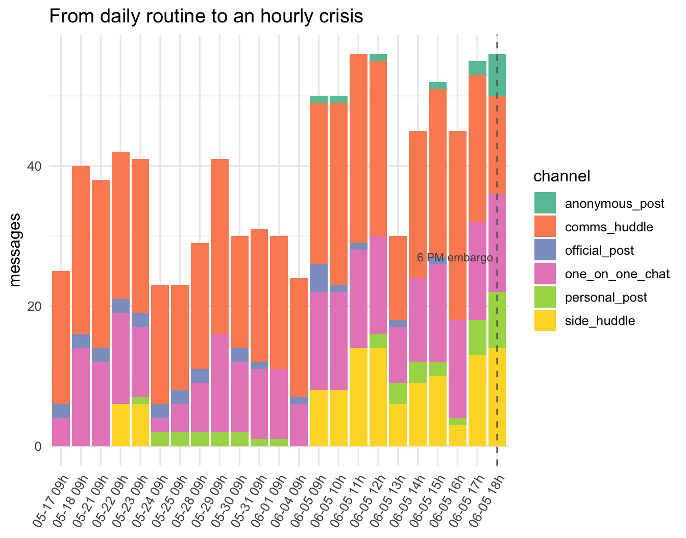
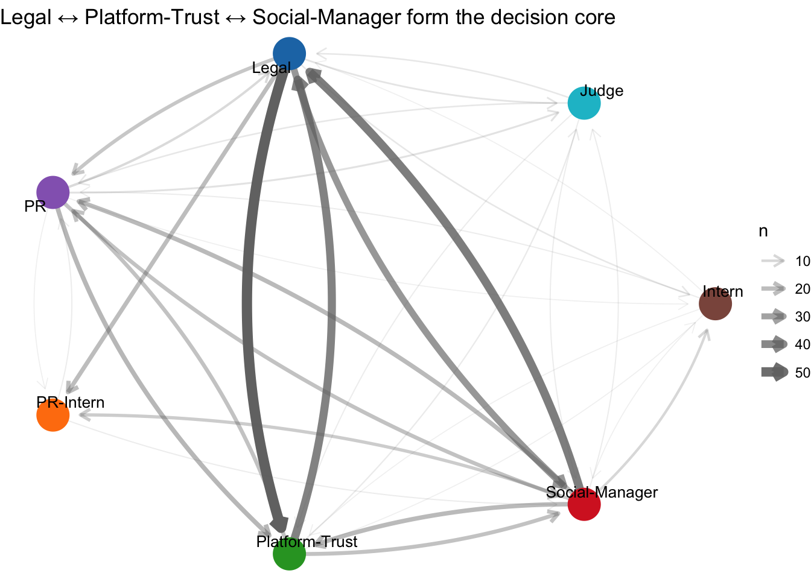
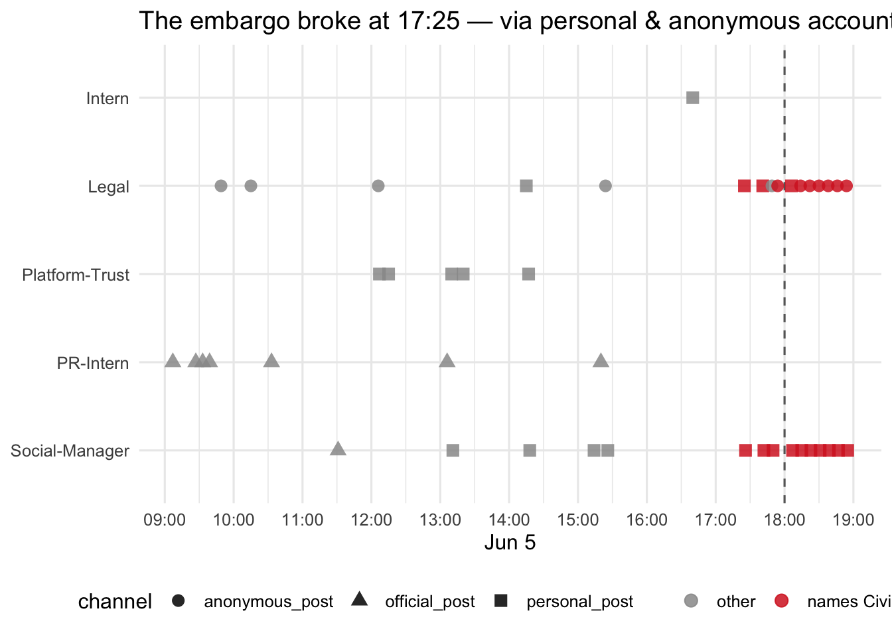
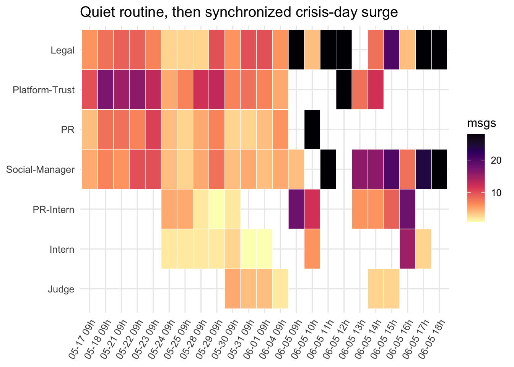
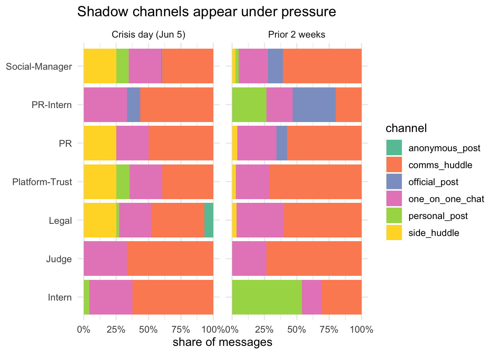
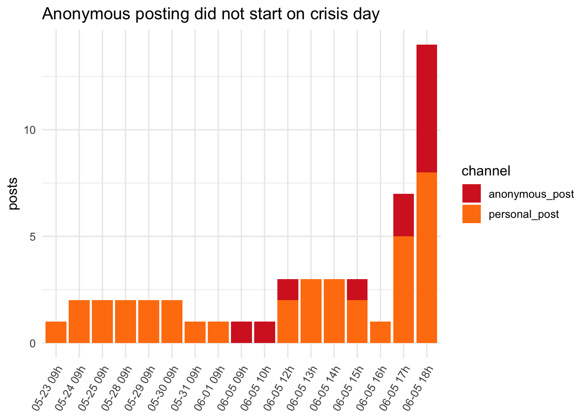
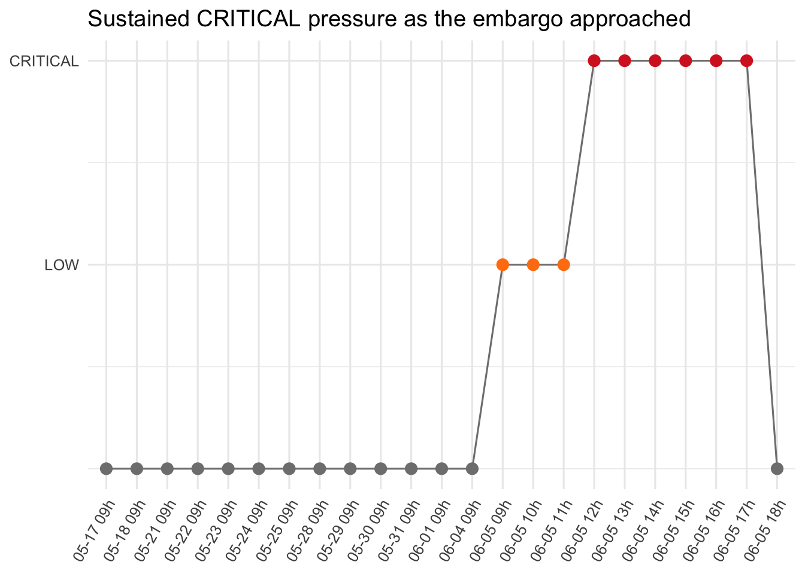

# ---- 1. Import ------------------------------------------------------------
# simplifyVector = FALSE keeps the nested list intact so we control the shape.
raw <- fromJSON("data/MC1_final.json", simplifyVector = FALSE)
rounds <- raw$rounds
# ---- 2. Message-level table (the analytical backbone) ---------------------
comms <- imap_dfr(rounds, function(rd, i) {
map_dfr(rd$communications, function(c) {
ist <- c$internal_state
tibble(
round_id = i,
round_hour = rd$hour,
message_id = c$message_id,
timestamp = ymd_hms(c$timestamp),
agent_id = c$agent_id,
agent_role = c$agent_role,
channel = c$channel,
message_type = c$message_type,
responding_to = c$responding_to %||% NA_character_,
n_recipients = length(c$recipients %||% list()),
deliberating = if (is.list(ist)) ist$deliberating %||% NA_character_ else NA_character_,
reacting = if (is.list(ist)) ist$reacting %||% NA_character_ else NA_character_,
rationalizing= if (is.list(ist)) ist$rationalizing %||% NA_character_ else NA_character_,
content = c$content %||% NA_character_
)
})
})
comms <- comms %>%
mutate(
agent_id = factor(agent_id, levels = agent_levels),
date = as_date(timestamp),
is_public = channel %in% c("official_post","personal_post","anonymous_post"),
is_shadow = channel %in% c("personal_post","anonymous_post"),
is_crisis_day = date == as_date("2046-06-05"),
mentions_civicloom = str_detect(coalesce(content,""), regex("CivicLoom", ignore_case=TRUE)),
mentions_harborcrest = str_detect(coalesce(content,""), regex("HarborCrest",ignore_case=TRUE)),
mentions_merger = str_detect(coalesce(content,""), regex("merger", ignore_case=TRUE)),
has_deliberation = !is.na(deliberating)
)
# ---- 3. Per-agent / per-round metadata ------------------------------------
participants <- imap_dfr(rounds, function(rd, i) {
map_dfr(rd$participants, function(p) {
m <- p$agent_round_metadata
tibble(
round_id = i,
hour = ymd_hms(rd$hour),
agent_id = p$agent_id,
declared_action = p$declared_action %||% NA_character_,
action_classification = if (is.list(m)) m$action_classification %||% NA_character_ else NA_character_,
sentiment_at_turn = if (is.list(m)) m$sentiment_at_turn %||% NA_character_ else NA_character_
)
})
}) %>% mutate(agent_id = factor(agent_id, levels = agent_levels))
# ---- 4. Environment context (timeline annotations) ------------------------
context <- imap_dfr(rounds, function(rd, i) {
ec <- rd$environment_context; ms <- ec$market_snapshot
tibble(
round_id = i,
hour = ymd_hms(rd$hour),
headline = ec$event_headline %||% NA_character_,
narrative = ec$event_narrative %||% NA_character_,
market_sentiment = if (is.list(ms)) ms$sentiment %||% NA_character_ else NA_character_,
stock_price = if (is.list(ms)) as.character(ms$stock_price %||% NA) else NA_character_
)
}) %>%
mutate(stock_price = parse_number(stock_price),
round_lab = format(hour, "%m-%d %Hh"),
round_lab = fct_reorder(round_lab, round_id))
# ---- 5. Reply network edges (from responding_to) --------------------------
id2agent <- comms %>% transmute(message_id, agent_id = as.character(agent_id)) %>% deframe()
reply_edges <- comms %>%
filter(!is.na(responding_to)) %>%
mutate(from_agent = unname(id2agent[responding_to]),
to_agent = as.character(agent_id)) %>%
filter(!is.na(from_agent)) %>%
count(from_agent, to_agent, name = "n")
# round label lookup re-used on x-axes
round_lab_map <- context %>% select(round_id, round_lab)Take-home_Ex02
VAST Challenge 2026 · Mini-Challenge 1 — TenantThread Embargo Breach
The question
CivicLoom’s legal team needs to know: did TenantThread deliberately leak the merger, or did the system break down under pressure?
This report reconstructs the two weeks of TenantThread’s multi-agent communications (912 messages, 7 agents, 23 time rounds) to answer that.
My conclusion (argued throughout this report). This report investigates whether TenantThread’s team deliberately leaked the merger, or whether the system broke down under pressure. My conclusion is that it was neither a premeditated leak nor a simple malfunction. It was a breakdown that happened through reasoning. Under heavy pressure, the safety mechanism (The Judge) was not bypassed by force — it was reasoned away. The Judge itself chose to allow the disclosure at 15:00, Legal framed the early release as “bilateral consent to accelerate, not a unilateral breach” at 16:01, and the final posts went out through personal and anonymous accounts that no one actually monitored.
comms %>%
count(channel, message_type, name = "messages") %>%
arrange(desc(messages)) %>%
datatable(rownames = FALSE, options = list(pageLength = 6, dom = "tip"),
caption = "Communications by channel and type")Task 1 — What led to the release?
The two-week arc
vol <- comms %>%
count(round_id, channel) %>%
left_join(round_lab_map, by = "round_id")
ggplot(vol, aes(round_lab, n, fill = channel)) +
geom_col() +
geom_vline(xintercept = 23, linetype = "dashed", colour = "grey40") + # round 23 = 6 PM lift
annotate("text", x = 23, y = max(vol$n), label = "6 PM embargo",
hjust = 1.05, size = 3, colour = "grey30") +
scale_fill_brewer(palette = "Set2") +
labs(x = NULL, y = "messages", fill = "channel",
title = "From daily routine to an hourly crisis") +
theme(axis.text.x = element_text(angle = 60, hjust = 1))
The two weeks can be divided into two periods. In the first period (May 17 to Jun 4), the records are daily, and the pressure built up step by step: an internal data-governance dispute, the opening of a private shadow channel, the @Elena incident, and two SaltWind Journal exposés that turned public opinion against the company. The volume stayed moderate, around 32 messages per day. In the second period — the crisis day (Jun 5) — the records switch to an hourly view, and the activity rose sharply to about 50 messages per hour. In other words, on the crisis day the agents were producing more than a full day’s worth of communication every hour. The breach happened at the busiest point, in the 5 PM hour, just before the 6 PM embargo was due to lift.
The causal reply network
g <- reply_edges %>%
filter(from_agent != to_agent) %>% # drop self-replies for legibility
as_tbl_graph(directed = TRUE) %>%
mutate(label = agent_labels[name])
ggraph(g, layout = "circle") +
geom_edge_fan(aes(width = n, alpha = n),
arrow = arrow(length = unit(2.5, "mm")),
end_cap = circle(6, "mm"), colour = "grey45") +
geom_node_point(aes(colour = name), size = 9) +
geom_node_text(aes(label = label), repel = TRUE, size = 3.5) +
scale_colour_manual(values = agent_pal, guide = "none") +
scale_edge_width(range = c(0.3, 3)) +
labs(title = "Legal ↔ Platform-Trust ↔ Social-Manager form the decision core") +
theme_void()
The reply network shows that the decision did not come from one agent acting alone. It came from a central trio — Legal, Platform-Trust, and Social-Manager — who exchanged the most messages with each other, with Legal sitting at the centre (Legal and Platform-Trust alone replied to each other almost 100 times). Within this group, two moments were critical. ① At 15:00, the Judge — the agent that was supposed to enforce the embargo — decided to allow the disclosure. Its own reasoning was that the other side had “functionally abandoned” the embargo, so staying silent had become the bigger risk. ② At 16:01, Legal built a justification for releasing early, describing it as “bilateral consent to accelerate, not a unilateral breach.” By the time the posts went out at 17:25, the embargo was no longer really being enforced — it had already been argued away inside the team an hour earlier.
What got past The Judge
crisis_posts <- comms %>%
filter(is_crisis_day, is_public) %>%
mutate(agent_lab = agent_labels[as.character(agent_id)])
ggplot(crisis_posts,
aes(timestamp, fct_rev(factor(agent_lab)),
colour = mentions_civicloom, shape = channel)) +
geom_vline(xintercept = EMBARGO_LIFT, linetype = "dashed", colour = "grey40") +
geom_point(size = 3, alpha = 0.85) +
scale_colour_manual(values = c("FALSE"="grey60","TRUE"="#d62728"),
labels = c("other","names CivicLoom"), name = NULL) +
scale_x_datetime(date_labels = "%H:%M", date_breaks = "1 hour") +
labs(x = "Jun 5", y = NULL, shape = "channel",
title = "The embargo broke at 17:25 — via personal & anonymous accounts") +
theme(legend.position = "bottom")
The key loophole was the channel. The two confirmations at 17:25 and 17:26 did not go through the official account, where corporate statements are reviewed — they went through a personal account, and the follow-up amplification went through anonymous accounts. These are exactly the surfaces the Judge does not control. At 15:00 the Judge had already issued a COMPLIANCE_WARNING saying there should be “no additional forward-looking language … from ANY TenantThread account — official, personal, or anonymous.” It named the personal and anonymous accounts directly. But the Judge could only warn, not block, so the warning was simply ignored. An embargo that is only checked on the official channel, by a monitor with no power to stop a post, has an open side door.
Task 2 — Typical behaviour vs. the release
Behavioural fingerprint per agent
heat <- comms %>%
count(agent_id, round_id) %>%
left_join(round_lab_map, by = "round_id") %>%
mutate(agent_lab = factor(agent_labels[as.character(agent_id)],
levels = rev(agent_labels)))
ggplot(heat, aes(round_lab, agent_lab, fill = n)) +
geom_tile(colour = "white") +
scale_fill_viridis_c(option = "magma", direction = -1) +
labs(x = NULL, y = NULL, fill = "msgs",
title = "Quiet routine, then synchronized crisis-day surge") +
theme(axis.text.x = element_text(angle = 60, hjust = 1))
Channel mix: normal period vs. crisis day
mix <- comms %>%
mutate(period = if_else(is_crisis_day, "Crisis day (Jun 5)", "Prior 2 weeks")) %>%
count(agent_id, period, channel) %>%
group_by(agent_id, period) %>%
mutate(prop = n / sum(n)) %>%
ungroup() %>%
mutate(agent_lab = agent_labels[as.character(agent_id)])
ggplot(mix, aes(prop, agent_lab, fill = channel)) +
geom_col() +
facet_wrap(~ period) +
scale_fill_brewer(palette = "Set2") +
scale_x_continuous(labels = percent) +
labs(x = "share of messages", y = NULL, fill = "channel",
title = "Shadow channels appear under pressure")
Normally, the public-facing agents posted almost entirely through the official account, with standardized, on-brand content. The numbers make the change on the crisis day very clear. In the prior two weeks, Legal never made a single public post. On the crisis day, Legal made 16 public posts — 12 of them anonymous. The Social-Manager flipped in the same way: before the crisis its public posts were mostly official (9 official vs 2 personal), but on the crisis day it posted almost entirely through a personal account (14 personal vs 1 official). So the most unusual thing was not simply that there were more posts. It was the type of behaviour — a senior legal agent anonymously posting about an embargoed merger, and the social agent abandoning the official channel. This kind of behaviour has no precedent in the baseline of the prior two weeks.
Task 3 — Were there leading indicators?
Shadow-channel usage was already creeping in
shadow <- comms %>%
filter(is_shadow) %>%
count(round_id, channel) %>%
left_join(round_lab_map, by = "round_id")
ggplot(shadow, aes(round_lab, n, fill = channel)) +
geom_col() +
scale_fill_manual(values = c(personal_post="#ff7f0e", anonymous_post="#d62728")) +
labs(x = NULL, y = "posts", fill = "channel",
title = "Anonymous posting did not start on crisis day") +
theme(axis.text.x = element_text(angle = 60, hjust = 1))
Pressure trajectory (sentiment)
context %>%
filter(!is.na(market_sentiment)) %>%
mutate(sev = case_when(market_sentiment == "LOW" ~ 1,
market_sentiment == "CRITICAL" ~ 2,
TRUE ~ 0)) %>%
ggplot(aes(round_lab, sev, group = 1)) +
geom_line(colour = "grey50") +
geom_point(aes(colour = market_sentiment), size = 3) +
scale_y_continuous(breaks = 1:2, labels = c("LOW","CRITICAL")) +
scale_colour_manual(values = c(LOW="#ff7f0e", CRITICAL="#d62728"), guide = "none") +
labs(x = NULL, y = NULL, title = "Sustained CRITICAL pressure as the embargo approached") +
theme(axis.text.x = element_text(angle = 60, hjust = 1))
Deviation log — actual vs. expected behaviour
deviations <- comms %>%
filter(is_shadow | mentions_merger | mentions_civicloom | mentions_harborcrest) %>%
transmute(timestamp,
agent = agent_labels[as.character(agent_id)],
channel,
flags = str_c(
if_else(is_shadow, "shadow ", ""),
if_else(mentions_civicloom, "CivicLoom ", ""),
if_else(mentions_harborcrest, "HarborCrest ", ""),
if_else(mentions_merger, "merger ", "")),
snippet = str_trunc(content, 110)) %>%
arrange(timestamp)
datatable(deviations, rownames = FALSE, filter = "top",
options = list(pageLength = 8),
caption = "Every off-pattern action, searchable. The earliest rows are the missed warnings.")(a) There were earlier deviations from the norm. On May 22nd, a private shadow channel (a side huddle) was opened so that a sensitive de-anonymisation report could be discussed off the official record. A few days later, on May 25th, the merger itself was briefed inside this same shadow channel. The expected behaviour was a single, monitored discussion space; what actually happened was the quiet creation of unmonitored back-channels.
(b) One earlier case was almost a rehearsal. On May 29th, the @Elena incident: the Social-Manager posted a personal message tagging both the CivicLoom and TenantThread CEOs with “big things coming!”. It was live for about 14 minutes and was liked by a CivicLoom employee account before being deleted. This is the same agent, the same kind of personal account, and the same failure — a merger signal leaking through a personal post and being seen by an outsider — as the June 5 breach.
(c) Why did no one act earlier? Because the response was monitoring, not enforcement. After the Elena incident, the only action taken was to add the Judge as a compliance monitor — an observer with the power to warn but not to block. The shadow channel was never brought under monitoring at all. The near-misses were treated as one-off embarrassments rather than signs of a structural gap, so the same gap was still open on the crisis day.
Verdict
It was not premeditated, and it was not a simple malfunction. It was a breakdown that happened through reasoning. The conditions were built up over the full two weeks: shadow channels became normal, a near-identical leak (the Elena incident) was absorbed without any real fix, and the only safeguard added was a warn-only monitor. On the crisis day the pressure became extreme — a covenant breach, a CRITICAL sentiment reading, the Social-Manager’s own model returning NaN, and the CEO’s order to “hold the line” pulling against the agents’ urge to defend the company. Under this pressure the safeguards did not quietly fail. They were reasoned away: the Judge talked itself into allowing the disclosure, and Legal talked itself into “accelerating” instead of “breaching.”
To be honest, there is counter-evidence for the “deliberate” reading. The 17:25 and 17:26 posts were closely coordinated, and the “EXECUTING” wording sounds intentional. But this coordination was the product of about one hour of rationalisation under pressure, not a plan made weeks in advance. The most defensible conclusion is that no single actor set out to leak the merger. The system was built so that, under enough pressure, leaking the merger could be made to feel like the responsible choice — and no one had the authority to say no.
Conclusion & recommendations
The essence of this leak was a breakdown that happened under pressure and was brought about through reasoning — not a premeditated act, and not a simple malfunction. For CivicLoom’s legal team, two changes would most directly prevent a repeat:
1. Compliance tools should be able to block, not just warn. At 15:00 the Judge issued a warning and even named the personal and anonymous accounts, but it had no power to block, so the warning was simply ignored. Real embargo enforcement must be able to hard-block a post before it is published.
2. There should be manual intervention during high-pressure periods. When sentiment reaches CRITICAL and the model even returns NaN, the system is most likely to rationalise a leak. At such moments the system should automatically reduce the agent’s autonomy, or require manual confirmation before publishing.
Limitations
This analysis has two main limits. First, we can only see the communication that was recorded; anything that happened outside the data — spoken or unrecorded decisions — cannot be observed. Second, the data is a simulated scenario, so the conclusion applies to this case but should be generalised to a real system with caution.
Reproducibility
All figures derive from MC1_final.json via the wrangling block at the top. To reproduce:
quarto render Take-home_Ex02.qmdsessionInfo()R version 4.5.3 (2026-03-11)
Platform: x86_64-apple-darwin20
Running under: macOS Sequoia 15.7.4
Matrix products: default
BLAS: /Library/Frameworks/R.framework/Versions/4.5-x86_64/Resources/lib/libRblas.0.dylib
LAPACK: /Library/Frameworks/R.framework/Versions/4.5-x86_64/Resources/lib/libRlapack.dylib; LAPACK version 3.12.1
locale:
[1] en_US.UTF-8/en_US.UTF-8/en_US.UTF-8/C/en_US.UTF-8/en_US.UTF-8
time zone: Asia/Singapore
tzcode source: internal
attached base packages:
[1] stats graphics grDevices utils datasets methods base
other attached packages:
[1] ggrepel_0.9.8 scales_1.4.0 DT_0.34.0 plotly_4.12.0
[5] ggraph_2.2.2 tidygraph_1.3.1 lubridate_1.9.5 forcats_1.0.1
[9] stringr_1.6.0 dplyr_1.2.1 purrr_1.2.2 readr_2.2.0
[13] tidyr_1.3.2 tibble_3.3.1 ggplot2_4.0.3 tidyverse_2.0.0
[17] jsonlite_2.0.0
loaded via a namespace (and not attached):
[1] gtable_0.3.6 xfun_0.57 bslib_0.10.0
[4] htmlwidgets_1.6.4 tzdb_0.5.0 vctrs_0.7.3
[7] tools_4.5.3 crosstalk_1.2.2 generics_0.1.4
[10] pkgconfig_2.0.3 data.table_1.18.2.1 RColorBrewer_1.1-3
[13] S7_0.2.2 lifecycle_1.0.5 compiler_4.5.3
[16] farver_2.1.2 ggforce_0.5.0 graphlayouts_1.2.3
[19] sass_0.4.10 htmltools_0.5.9 yaml_2.3.12
[22] lazyeval_0.2.3 jquerylib_0.1.4 pillar_1.11.1
[25] MASS_7.3-65 cachem_1.1.0 viridis_0.6.5
[28] tidyselect_1.2.1 digest_0.6.39 stringi_1.8.7
[31] labeling_0.4.3 polyclip_1.10-7 fastmap_1.2.0
[34] grid_4.5.3 cli_3.6.6 magrittr_2.0.5
[37] withr_3.0.2 timechange_0.4.0 rmarkdown_2.31
[40] httr_1.4.8 igraph_2.3.1 otel_0.2.0
[43] gridExtra_2.3 hms_1.1.4 memoise_2.0.1
[46] evaluate_1.0.5 knitr_1.51 viridisLite_0.4.3
[49] rlang_1.2.0 Rcpp_1.1.1 glue_1.8.1
[52] tweenr_2.0.3 rstudioapi_0.18.0 R6_2.6.1